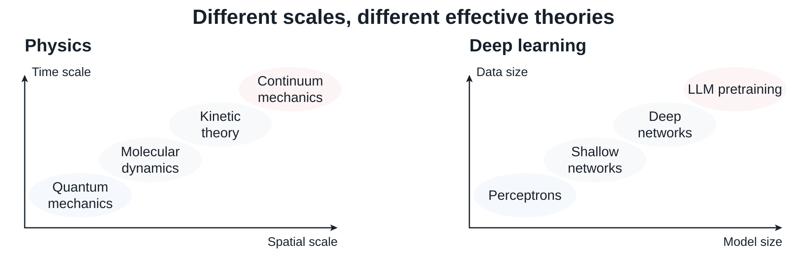
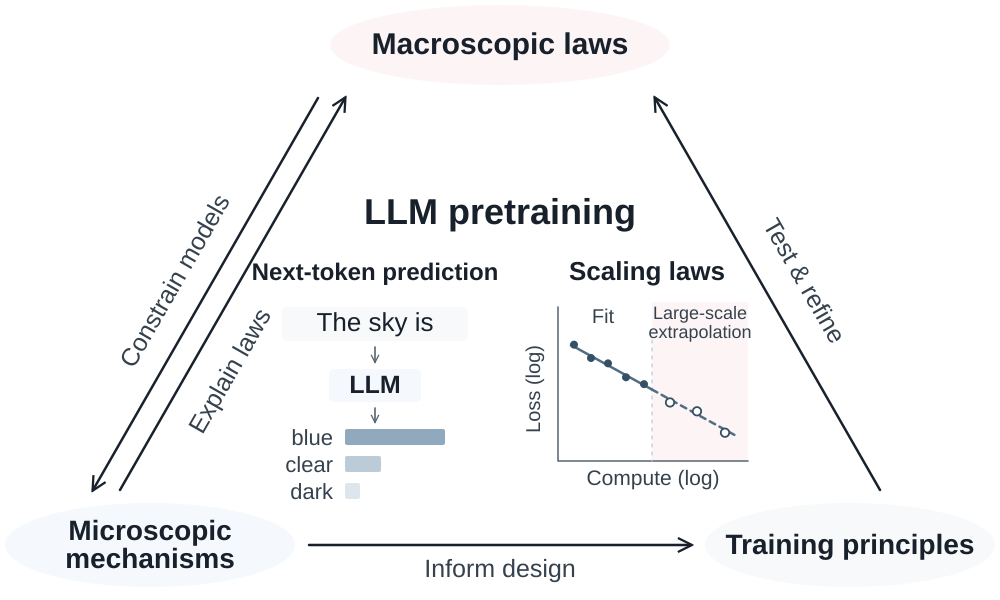

Research: Toward a predictive science of deep learningMy goal is to uncover the principles governing deep learning and use them to explain mechanisms, make quantitative predictions, and inform algorithm design. Research perspective: scales and effective theoriesMy approach draws on three complementary perspectives:
Inspired by physics, I view scale as an organizing principle for deep learning. I do not expect a single theory to capture learning across all scales; different scales require different effective theories.  This perspective suggests two complementary routes toward understanding deep learning:
Much of my earlier work followed the bottom-up route, but connecting simplified models to real-world training often proved difficult. Different assumptions and regimes can lead to very different conclusions, without revealing which mechanisms matter in practice. I am now exploring the top-down route: using macroscopic regularities to guide the construction and analysis of microscopic models, so that the two approaches can inform one another. Functional scaling laws: toward an effective theory of LLM pretrainingWe introduced functional scaling laws (FSL): explicit functionals mapping learning-rate and batch-size schedules to loss trajectories. Schematically, \[ \underbrace{\mathcal{L}_t}_{\text{loss dynamics}} \approx \mathcal{F}_t\!\left[ \underbrace{\eta(\cdot)}_{\text{learning-rate schedule}},\, \underbrace{B(\cdot)}_{\text{batch-size schedule}} \right]. \] Derived in power-law kernel regression, FSL reveals how signal learning and noise forgetting jointly shape learning dynamics. We use these mechanisms to predict and steer LLM pretraining.
For an overview, see my talk slides. Broader research contextLarge language model (LLM) pretraining optimizes a next-token prediction objective at an enormous scale: \[ \min_{\theta} \mathcal{R}(\theta),\qquad \mathcal{R}(\theta)=\mathbb{E}_{\mathbf{x}\sim\mathcal{D}} \left[-\sum_{k=2}^{L}\log P_{\theta}(x_k\mid x_1,\dots,x_{k-1})\right]. \] Here, \(P_\theta\) is a Transformer language model, and \(\mathcal{D}\) is an internet-scale text corpus. Despite the complexity of this process, pretraining exhibits simple macroscopic regularities, such as scaling laws. I study these regularities at three connected levels:
 Dynamical stability of SGDWe pioneered the dynamical-stability perspective on SGD's implicit regularization to understand why SGD favors some minima over others. Our work connects the dynamical stability of minima to their sharpness and generalization properties.
For an overview, see my talk slides. Barron spaces and neural-network function spacesWe introduced and named Barron spaces for two-layer neural networks, establishing approximation and generalization results within this function-space framework. Our broader work studies how neural networks efficiently approximate and learn high-dimensional functions, and how their capabilities differ from kernel and random-feature methods.
For an overview, see my talk slides. |